البني الطبيعي
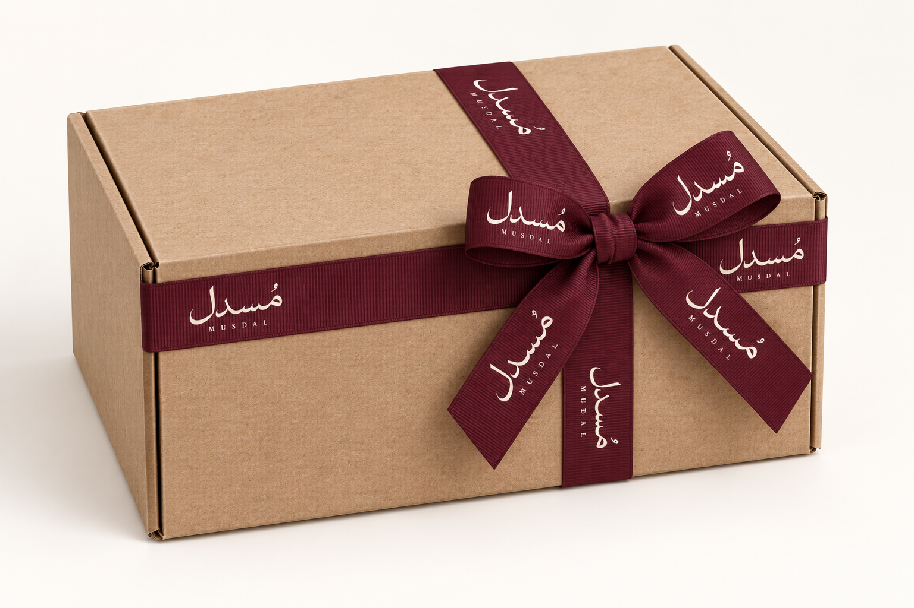
تنزيل الصورة المستقلة
بوكس كرافت بلونه الأصلي + شبرة بورغندي مطبوعة بالاسم والرابط بالأوف وايت. لا صبغ أو طباعة على البوكس نفسه.
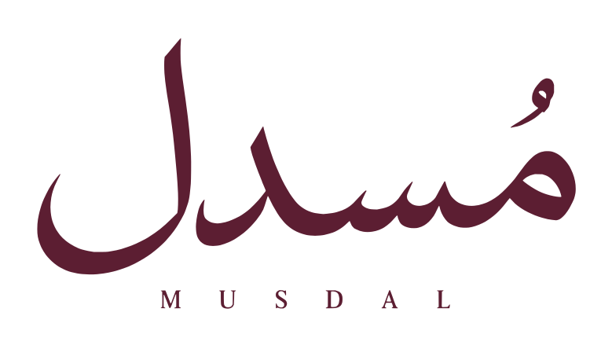
خياران لكل عنصر / الإصدار 01بوكس، ورقة داخلية، وبطاقات. كل عنصر له خياران مستقلان. لون البوكس هو لون خامته الجاهز، والهوية على الشبرة.
التغليف الخفيف لكل طلب، والبوكس للهدايا فقط. تصميم الكيس الملون معتمد، وموعد إنتاجه لاحقًا.

تنزيل الصورة المستقلةبوكس كرافت بلونه الأصلي + شبرة بورغندي مطبوعة بالاسم والرابط بالأوف وايت. لا صبغ أو طباعة على البوكس نفسه.
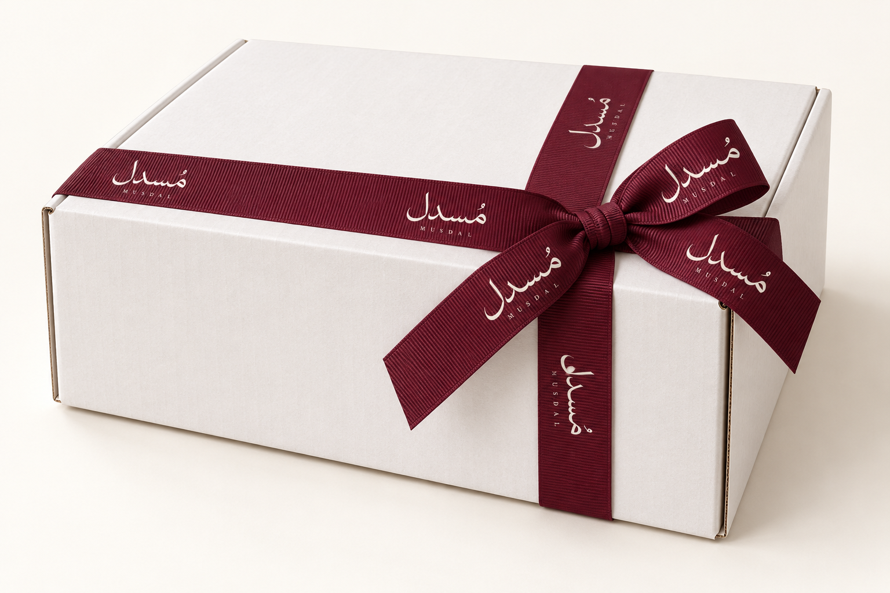
تنزيل الصورة المستقلةبوكس أبيض أصلي من مخزون المورد + نفس الشبرة. الأبيض خامة جاهزة، دون كسوة أو لون مخصص.
معاينتان مولّدتان منفصلتان. الرابط غير مطبوع في الصور إلى حين تثبيته؛ الاسم والرابط يظهران معًا في وحدة الشبرة أدناه.
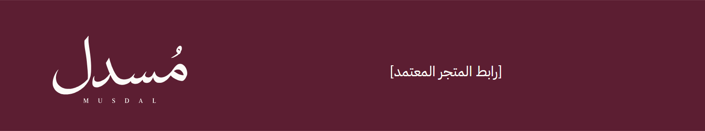
تنزيل الصورة المستقلةعرض 25 مم وتكرار 160 مم مقترحان. الأوف وايت طبعة واحدة فوق نسيج بورغندي؛ يتأكد المورد من خامتها ووضوح الرابط. الطول يحدد على عينة البوكس. خانة [رابط المتجر المعتمد] تستبدل بالرابط الصحيح قبل الطباعة.
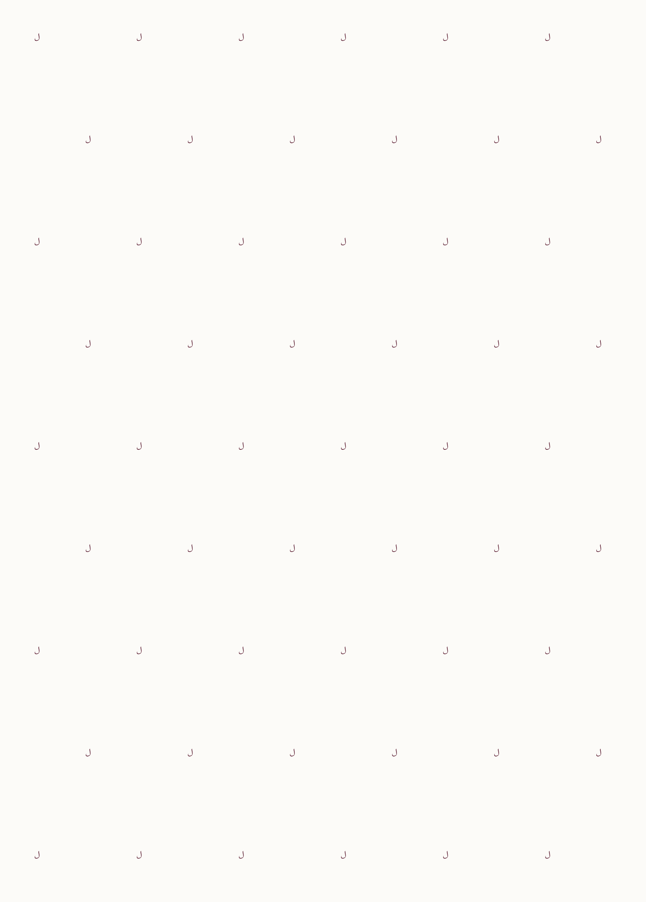
تنزيل الصورة المستقلةالورقة بلون التيشو الطبيعي الفاتح، مع رموز لام بورغندي موزعة ومتباعدة. أوضح في إظهار الهوية.
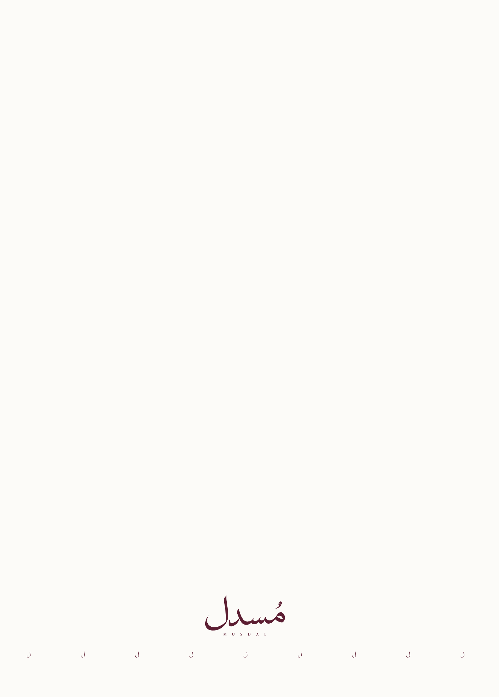
تنزيل الصورة المستقلةنفس الورقة الفاتحة، معظمها سادة. الاسم وسطر لام قرب حافة واحدة يظهران بعد الطي.
المقاس المقترح 500 × 700 مم؛ تيشو 22–30gsm يُختبر مع القطع. حبر بورغندي واحد في الخيارين. موضع الحافة يُضبط حسب الطي.
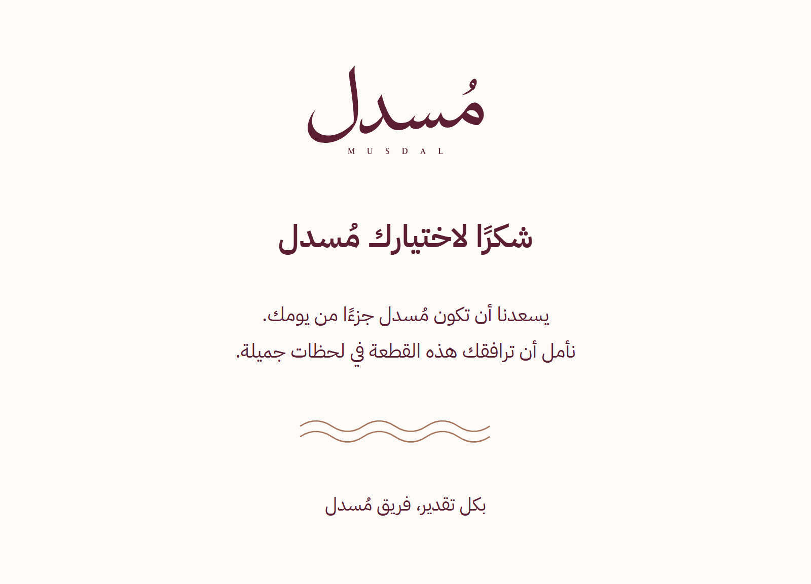
تنزيل الصورة المستقلةوجه شكر فاتح ونص بورغندي. نفس الألوان لبطاقة الإهداء والعناية.
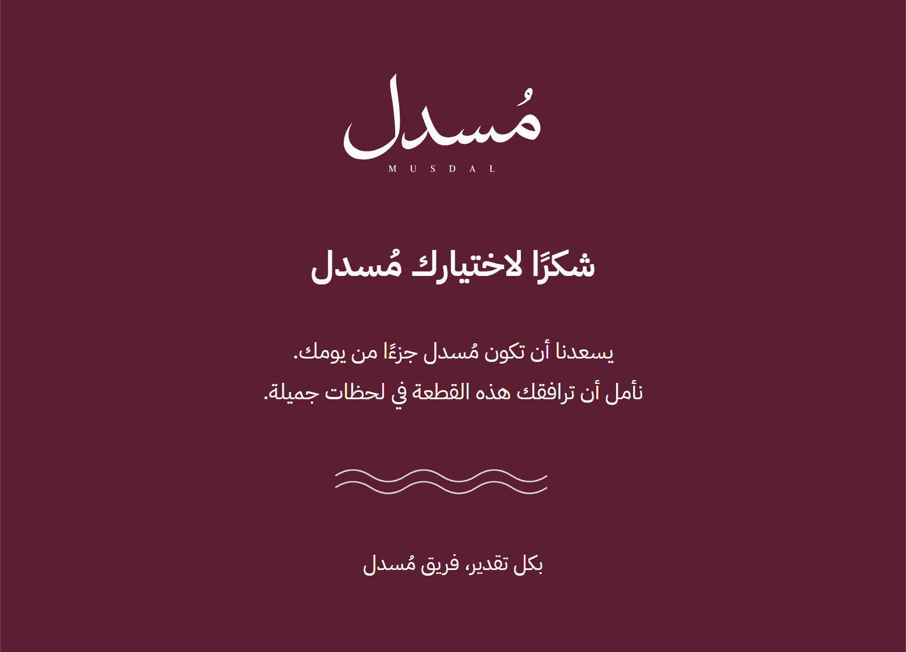
تنزيل الصورة المستقلةوجه شكر بورغندي ونص أوف وايت. نفس الألوان لبطاقة الإهداء والعناية.
«هدية لطلبك القادم. اقشط المساحة واكتشف هديتك.»
بطاقة الشكر والخصم قطعة واحدة ذات وجهين. مقاسها 148 × 105 مم، ومنطقة القشط 60 × 20 مم.
خصم 10% ومدة 45 يومًا مقترحان للمراجعة. الرمز تجريبي وغير مفعّل.
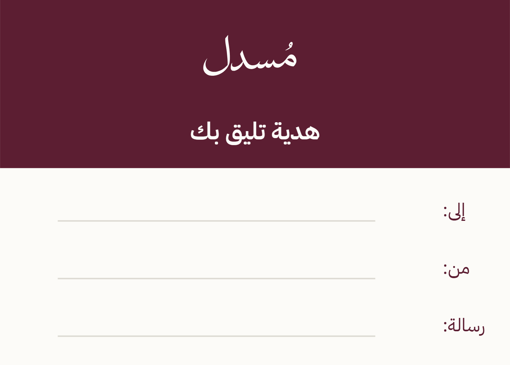
تنزيل الصورة المستقلة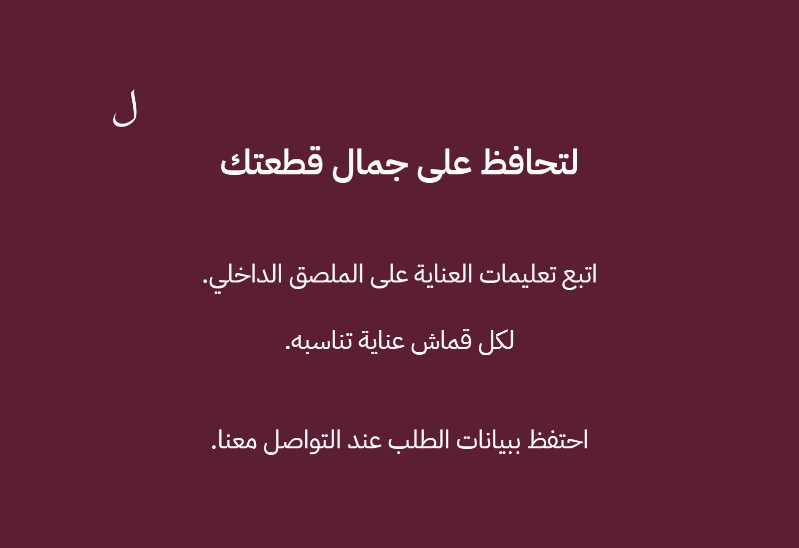
تنزيل الصورة المستقلةخيار الإهداء البورغندي يستخدم ترويسة داكنة ومساحة رسالة أوف وايت، لتكتب الرسالة بقلم عادي.
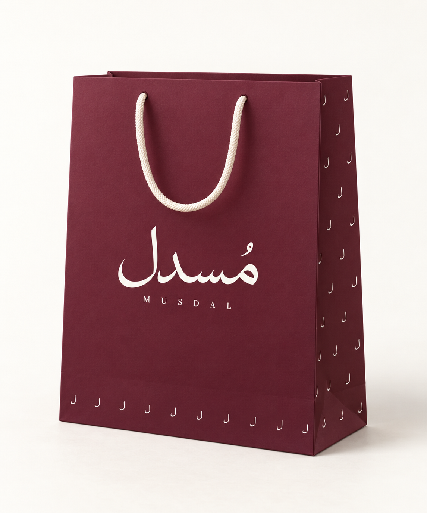
تنزيل الصورة المستقلةالكيس ملون بالكامل، والواجهة هادئة بالشعار. الباترن على الجانبين وحافة أسفل الواجهة، مع يد أوف وايت.
32 × 40 × 12 سم مقاس مقترح يتغير حسب القطعة وحجم البوكس. نختبر ورقًا 200–250gsm مع تدعيم القاعدة واليد.
الكيس للتسليم أو الإهداء؛ الحماية عند الشحن مسؤولية الغلاف الخارجي. تصميمه معتمد، ولا يدخل في التغليف اليومي تلقائيًا. قالب القص النهائي من المورد.
الاسم والرابط على الواجهة؛ الرابط يُضاف بعد تثبيته. ملفات الواجهة والجنب مرفقة، والمعاينة المولّدة لتوضيح الشكل.
| العنصر | المواصفة المقترحة للديزاينر والمورد |
|---|---|
| البوكس | خامة كرافت أو أبيض جاهز؛ مقاسه بعد طي عينة فعلية. M داخلي 360×280×80 مم وL 420×320×120 مم كبداية اختبار فقط. |
| الشبرة | بورغندي 25 مم؛ اسم ورابط أوف وايت، تكرار 160 مم مقترح؛ الطول من عينة البوكس. |
| ورقة داخلية | 500×700 مم؛ ورق فاتح بلون الخامة؛ 22–30gsm وحبر بورغندي واحد مقترحان. |
| شكر/قشط | 148×105 مم؛ ملف 154×111 مم بالنزف. 350–400gsm بسطح متوافق مع القشط؛ قناع 60×20 مم مستقل. |
| الإهداء والعناية | إهداء 100×70 مم قابل للكتابة؛ عناية 90×60 مم. خيار البورغندي بترويسة داكنة ومساحة رسالة فاتحة. |
| الستيكر وبطاقة المنتج | ستيكر قطر 40 مم؛ بطاقة المنتج 50×90 مم؛ البيانات من SKU والمقاس واللون الفعلي. |
| الكيس المعتمد | 320×400×120 مم؛ بورغندي كامل وباترن لام؛ ورق 200–250gsm مع عينة تحمل، قالب المورد مطلوب. |
المقترح للمراجعة: خصم ثابت 10% على الطلب القادم، لكل بطاقة رمز فريد، لمرة واحدة، لمدة 45 يومًا من الإصدار. النسبة والمدة غير معتمدتين تجاريًا بعد؛ تراجعان مع هامش كل فئة.
الخصم على القطع بالسعر الكامل؛ لا يشمل الشحن أو التخصيص أو المنتجات المخفضة، ولا يجمع مع عرض آخر. المقترح بلا حد أدنى للطلب؛ إن احتاجت الجدوى حدًا أدنى يجب إظهاره على البطاقة قبل طباعتها.
تاريخ انتهاء فعلي مطبوع لكل بطاقة. يُصدر الرمز عند تجهيز الطلب، ويربط برقم الطلب وصاحبه إذا دعمت المنصة ذلك. نتأكد من قيود الاستخدام قبل طباعة رموز حقيقية. الرمز DEMO-7K4P9X للمعاينة فقط، غير مفعّل.
كل البطاقات تمنح نفس الخصم. الكشف تحت القشط فيه «خصم 10%» والرمز؛ الهدية مضمونة، والتشويق في الكشف. بطاقة عادية بنفس النص خيار أسرع إذا لم تنجح عينة القشط أو كانت كلفتها عالية.
ملفات المرحلة الحالية للمراجعة وليست اعتماد طباعة. قبل الإنتاج نثبت رابط المتجر ونسبة الخصم وصلاحيته، قالب المورد، وألوان العينة المطبوعة.
اختاروا البوكس والورقة والبطاقة كل واحد لوحده. الأرقام مستقلة، ويمكن مزج أي خيار بوكس مع أي ورقة أو بطاقة.
| القرار | الخيار 1 | الخيار 2 |
|---|---|---|
| البوكس | بني طبيعي | أبيض جاهز |
| الورقة | لام متباعدة | حافة هادئة |
| البطاقة | أوف وايت | بورغندي |
التصاميم والقياسات قرارات مقترحة لمُسدل؛ مصادر الطباعة لا تمثل عرض سعر أو توفرًا لدى مورد محلي. الأصول المتجهية المرفقة مرجع الهوية، والصور المولّدة تشرح الشكل فقط.
الباليت واللام وشعار انسياب؛ أصول أصلية من المشروع.
يفصل الحبر المخفي عن الورنيش الواقي وطبقة القشط؛ دليل عملية، وليس عرض سعر محلي.
فصل الرسم الأساسي وطبقة القشط والطباعة فوقها؛ متطلبات الحبر تعتمد على طريقة الطباعة.
يدعم الرموز المتغيرة وهامش تغطية منطقة القشط؛ مواصفات المورد النهائي لها الأولوية.
ملفات PDF متجهية، نزف، وصور بدقة 300dpi؛ أحجام مُسدل في هذه الحزمة مقترحة.
مسار القص في طبقة منفصلة بلون خاص؛ التسمية تؤكد مع المطبعة.